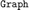
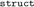
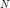
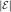
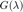

This is the code listing for the final thesis version
Contents
Utilities
In this section we describe all the helper functions required for the simulations.
- Generating Haar wavelets of given size
function [Hr]=generate_haar(N) % Author: Kamlesh Pawar % Input : % N : size of matrix to be generated, N must be some power of 2. % Output: % Hr : Haar matrix of size NxN
if (N<2 || (log2(N)-floor(log2(N)))~=0)
error('The input argument should be of form 2^k');
endp=[0 0]; q=[0 1]; n=nextpow2(N);
for i=1:n-1
p=[p i*ones(1,2^i)];
t=1:(2^i);
q=[q t];
end
Hr=zeros(N,N);
Hr(1,:)=1;
for i=2:N;
P=p(1,i); Q=q(1,i);
for j= (N*(Q-1)/(2^P)):(N*((Q-0.5)/(2^P))-1)
Hr(i,j+1)=2^(P/2);
end
for j= (N*((Q-0.5)/(2^P))):(N*(Q/(2^P))-1)
Hr(i,j+1)=-(2^(P/2));
end
end
Hr=Hr*(1/sqrt(N));
end- Graph Data Structures
Converting a graph from  type to 
function [G] = graph2struct(H) % Takes a graph type and outputs a graph struct to use for % the gsp box A = adjacency(H, 'weighted'); N = max(size(A)); G.N = N; G.W = A; % Assign a default circular embedding G.coords=[(cos((0:N-1)*(2*pi)/N))',(sin((0:N-1)*(2*pi)/N))']; G.plotting.limits=[-1,1,-1,1]; G = gsp_graph_default_parameters(G);
- Creating a random graph
function A = RandomGraph(N,p)
A = zeros(N,N);
for i = 1:N
for j = i:N
A(i,j) = binornd(1,p);
A(j,i) = A(i,j);
end
end
A = A - diag(diag(A));end
- Creating an N-Fan graph
function A = nfan(N)
%Return an N fan graph with 2n+1 vertices
A = zeros(2*N+1);
A(1,:) = ones(1,2*N+1); %The first vertex is the center of the fan
A(1,1) = 0;
for i = 1:N
%i loops through each blade
A(2*i,1) = 1;
A(2*i + 1, 1) = 1;
A(2*i, 2*i + 1) = 1;
A(2*i + 1, 2*i) = 1;
endend
- Graph Drawing
Computing the circular embedding of an -vertex graph
function E = embedding(N,k) % N is the number of points % k is the center of the circle n = 0:1:N-1; x = cos(n*(2*pi/N)) + k(1); y = sin(n*(2*pi/N)) + k(2); E = [x;y] end
- Subgraphs
Finding the boundary from the index set
% This function gives the boundary of a subgraph indexed by sub
% Arguments: % 1. G is the ambient graph encoded as a struct % 2. sub indexes the subset
function Bindex = boundary(G, sub)
if ~isstruct(G) G = graph2struct(G); end
A = G.W; % Computing the adjacency matrix of G
Bindex = zeros(length(sub),length(A)); % Stores the index values of the boundary vertices
for i=1:length(sub)
for j=1:length(A(1,:))
if A(sub(i),j) ~= 0 && isempty(sub(sub==j))
Bindex(i,j) = j;
end
end
endBindex = unique(Bindex(:)); Bindex = Bindex(Bindex ~=0);
end
Computing subgraphs
% This function gives three important subgraphs: % H -- Subgraph of G induced by sub % I -- Subgraph of G induced by sub with boundary edges % J -- Subgraph of G induced by sub union boundary vertices % deltaS -- the boundary % G -- the graph % sub -- selection of the vertices
% First some mopping up. If G isn't a struct, we convert it to a struct % object. If it is then we keep it.
function [H,I,J, deltaS] = subs(G,sub)
if ~isstruct(G) G = graph2struct(G); end % A stores the adjacency (or weight) matrix
A = G.W;
% find boundary vertices
deltaS = boundary(G,sub);
% find induced subgraph
H = gsp_subgraph(G,sub);
% graph with subgraph and boundary
AdjS = zeros(length(sub)+length(deltaS)); % Creating an adjacency matrix AdjS(1:length(sub), 1:length(sub)) = A(sub,sub); AdjS(length(sub)+1:end,1:length(sub)) = A(deltaS, sub); AdjS(1:length(sub), length(sub)+1:end) = (A(deltaS, sub))' ; I = graph(AdjS); I = graph2struct(I);
I = gsp_subgraph(G,[sub';deltaS]); I.W(end-length(deltaS)+1:end,end-length(deltaS)+1:end) = zeros(length(deltaS));
% % graph induced by subgraph union boundary
J = subg(G,[sub';deltaS]);
% AdjS_deltaS = A([sub reshape(deltaS, [1,length(deltaS)])], [sub reshape(deltaS, [1,length(deltaS)])]); % % Creating reordered adjacency with subgraph vertices first % J = graph(AdjS_deltaS); % J = graph2struct(J); %
- Image Processing
Computing the graph of an image
function [G] = im2graph(I) %takes an image as a matrix %outputs a graph as a struct with lattice coords
[n,m] = size(I);
W = zeros(n*m);
sigma_p = max(max(I));
coordinates = zeros(n*m,2);
for i=1:n*m
row = floor((i-1)/n) + 1;
column = mod((i-1),m) + 1;
coordinates(i,2) = 1 - (row/n) + (1/n);
coordinates(i,1) = (column/m) - (1/m);
endfor i = 1:n*m
for j = 1:n*m
row1 = floor((i-1)/n) + 1; %row position of the ith pixel
column1 = mod((i-1),m) + 1; %column position of the ith pixel
row2 = floor((j-1)/n) + 1; %row position of the ith pixel
column2 = mod((j-1),m) + 1; %column position of the ith pixel
g_distance = norm(coordinates(i,:)-coordinates(j,:));
p_distance = I(row1, column1) - I(row2,column2);
W(i,j) = exp(-((g_distance)^2)/(2))*exp(-((p_distance)^2)/(2*sigma_p));
end
end
G.W = sparse(W);
G.coords = coordinates;
G.plotting.limits=[0,1,0,1];
G = gsp_graph_default_parameters(G);- Nodal Sets
Computing Nodal edges
function E = crossings(A,f)
E = 0;
N = max(size(A));
for i = 1:N
for j =i:N
if (f(i)*f(j) < 0) && (A(i,j) == 1)
E = E+1;
end
end
end
end
Computes G(lambda) from Proposition 2.2.1
function G = lowerbound(A, lambda)
N = max(size(A));
G = 0 ;
for i = 1:N
if sum(A(i,:)) < lambda
G = G + 1 ;
end
endGeneral Graph Theory
- Simulations with subgraphs and their boundaries
% Compute the graph here. Some sample computations are given below
% Erdos Renyi random graph
e = 50; v = 100; G := Graph::createRandomGraph(v,e, undirected):
% Random Graph with a bernoulli distributed adjacency matrix p=0.05; N = 100; A = RandomGraph(N,p); G = graph(A); plot(G)
% Path graphs
vec = zeros(1,10); vec(2) = 1; Adj = toeplitz(vec); G = graph(Adj) plot(G)
% Cyclic graph
vec = zeros(1,10); vec(2) = 1; vec(length(vec)) = 1; Adj = toeplitz(vec); G = graph(Adj); plot(G)
% Complete graph weights = [1 -2 3 -4 5 -6 7 -8 9]; vec = ones(1,9); vec(1) = 0; Adj = toeplitz(vec);
% Define the graph subset here in row or column vector form
sub = randperm(100,20);
create the three important subgraphs [S, S_deltaS, S_UdeltaS, deltaS] = subs(G,sub);
define new colormap
mymap = [1 0 0
0 0 0
0 0 1];
colormap(mymap);% plotting subgraph with boundary
colours = zeros(1,length(sub)+length(deltaS)); colours(1:length(sub)) = 1; colours(length(sub)+1:end) = 2;
% subroutine for assigning colours to edges
Edges = table2array(S_deltaS.Edges);
Edges = Edges(:,1:2); % Extract the set of edges denoted by ordered pairs
e_colours = zeros(1,length(Edges)); % Set of edges
for i = 1:length(e_colours)
if Edges(i,1) <= length(sub) && Edges(i,2) <= length(sub)
e_colours(i) = 1; % case when the edge is in S
else
e_colours(i) = 2;
end
end% end of subroutine
p = plot(S_deltaS, 'MarkerSize', 10, 'LineWidth', 2);
legend('Subgraph', 'Boundary');
p.NodeCData = colours;
p.NodeLabel = [];
p.EdgeCData = e_colours;
p% plotting graph induced by subgraph union boundary
v_colours = zeros(1,length(sub)+length(deltaS)); v_colours(1:length(sub)) = 2; v_colours(length(sub)+1:end) = 3;
% % subroutine for assigning colours to edges
Edges = table2array(S_UdeltaS.Edges);
Edges = Edges(:,1:2); % Extract the set of edges denoted by ordered pairs
e_colours = zeros(1,length(Edges)); % Set of edges
for i = 1:length(e_colours)
if Edges(i,1) <= length(sub) && Edges(i,2) <= length(sub)
e_colours(i) = 2; % case when the edge is in S
elseif Edges(i,1) > length(sub) && Edges(i,1) > length(sub)
e_colours(i) = 3; % case when the edge is not in S or the boundary
else
e_colours(i) = 1;end end
% % end of subroutine
subgraph_location = embedding(length(sub),[0 0]);
boundary_location = embedding(length(deltaS),[4 0]);
location = [subgraph_location boundary_location];
p = plot(S_UdeltaS, 'MarkerSize', 10, 'LineWidth', 2);
legend('Subgraph', 'Boundary');
p.NodeCData = v_colours;
p.NodeLabel = [];
p.EdgeCData = e_colours;
p.XData = location(1,:);
p.YData = location(2,:);
pFourier Analysis on graphs
- Computing Neumann and Dirichlet Operators
function [N,D, B, deltaT_S, T_S, N_mat] = Neumann_Dirichlet(G,sub) % Computes the Neumann and dirichlet operators % operator on the subgraph induced by sub % G is the graph. Could be in struct type. % sub is the selection of vertices
if ~isstruct(G) G = graph2struct(G); end
[~, S_deltaS, S_UdeltaS, ~] = subs(G,sub); L = S_UdeltaS.L; % note that L is stored as sparse double D = L(1:length(sub), 1:length(sub)); % the dirichlet matrix B = -L(length(sub)+1:end,1:length(sub)); %the boundary map l = S_deltaS.L; deltaT_S = l(length(sub)+1:end, length(sub)+1:end); N = sparse(D - (B')*(diag(1./diag(deltaT_S)))*B); diagonal = diag(l); T_S = diag(diagonal(1:length(sub))); N_mat = vertcat(sparse(eye(length(sub))), sparse((diag(1./diag(deltaT_S)))*B));
end
- Combinatorial Laplacian Spectra of some common graphs
N = 10; A = RandomGraph(N); G = graph(A); plot(G, 'NodeColor', 'r', 'MarkerSize', 10, 'LineWidth', 2);
% Path graphs
% vec = zeros(1,10); % vec(2) = 1; % Adj = toeplitz(vec); % G = graph(Adj) % plot(G)
% Cyclic graph % S % vec = zeros(1,10); % vec(2) = 1; vec(length(vec)) = 1; % Adj = toeplitz(vec); % G = graph(Adj); % plot(G)
% Complete graph %weights = [1 -2 3 -4 5 -6 7 -8 9]; % vec = ones(1,9); % vec(1) = 0; % Adj = toeplitz(vec);
% Emb = embedding(N); % G = graph(A); % L = full(laplacian(G)); % [V, D] = eig(L); %plot(G, 'XData', Emb(1,:), 'YData', Emb(2,:), 'ZData', V(:,6)); %stem(1:N, V(:,9))
- Exploring  vs 
N = 20;
figure
title('Comparing $$\mathcal{E}$$ to G');
for k = 1:9
A = RandomGraph(N);
G = graph(A);
L = full(laplacian(G));
[V, D] = eig(L);
%eigs stores the eigenvalues
eigs = diag(D);
%C stores the edge crossing number
C = zeros(1,N);
for i = 1:N
C(i) = crossings(A, V(:,i));
end
%Creating the G vector. For some reason Matlab isn't allowing me to broad
%cast so I'll just do it via a for loop. Sigh.
G = zeros(1,N);
for i = 1:N
G(i) = lowerbound(A, eigs(i));
end
subplot(3,3,k)
plot(eigs(2:N), C(2:N), 'r.');
hold on
plot(eigs(2:N), G(2:N)/2, 'b-');
end- Laplacian Spectra of Fans
A = nfan(3); G = graph(A); D = diag(A*ones(max(size(A)),1)); plot(G); L = full(laplacian(G)); L_norm = D^(-1/2)*L*D^(-1/2); [V,D] = eig(L_norm);
Diffusion maps
- Computing a Laplacian Eigenmap
function [Diff_maps] = My_Eigenmaps(G,t,dim) % Spits out 5 dimensional laplacian eigenmaps given a graph G in struct % form N = max(size(G.W)); % compute the random walk matrix here % t is the scaling factor in diffusion map lap = gsp_create_laplacian(G, 'normalized'); %lap will be a struct D = diag(full(lap.W)*(ones(N,1))); %Stores diagonal matrix M = eye(N) - full(lap.L); %Regularized random walk [X, Lambda] = eigs(M,dim+1,'largestabs'); %Compute spectral decomposition up to 5 eigenvectors Phi = D^(1/2)*X; %Phi matrix Psi = D^(-1/2)*X; %Psi matrix; you want to extract its columns! Diff_maps = (Psi)*(Lambda^t); %Multiplying each column with the respective eigenvalue Diff_maps = Diff_maps(:,2:end); %Dropping the first column as it's all a constant % Each column of diff_maps contains a coordinate of the diffusion map % to plot it, plot Diff_maps(:,j) in the jth coordinate end
- Laplacian eigenmaps with digital weights
First we provide a graph G. Enter graph here N = 128; % Number of vertices G = gsp_spiral(N,3); % Creating a graph in struct version
Diff_maps = My_Eigenmaps(G,1);
% Plotting the jdim diffusion map %plot(Diff_maps(:,1),Diff_maps(:,2),'ro'); plot3(Diff_maps(:,3),Diff_maps(:,4),Diff_maps(:,1),'ro');
- Diffusion maps for ring, spiral, swiss roll, sphere, and stochastic block graphs
% Uncomment each section to visualize the respective laplacian eigenmap
% Map for rings
G = gsp_ring(1000);
W = full(G.W);
[mappedX, mapping, lambda] = lapbasic(W, 3, 1, 'JDQR');
for i=0:0.1:1
plot(mappedX(:,1),mappedX(:,3))
hold on
end% % Map for spiral % % G = gsp_spiral(100,3); % W = full(G.W); % [mappedX, mapping, lambda] = lapbasic(W, 3, 1, 'JDQR'); % for i=0:0.1:1 % plot3(((lambda(1))^(-i))*mappedX(:,1),((lambda(2))^(-i))*mappedX(:,2),((lambda(3))^(-i))*mappedX(:,3)) % hold on % end
% % Map for sphere % % G = gsp_sphere(100); % W = full(G.W); % [mappedX, mapping, lambda] = lapbasic(W, 3, 1, 'JDQR'); % for i=0:0.1:1 % plot3(((lambda(1))^(-i))*mappedX(:,1),((lambda(2))^(-i))*mappedX(:,2),((lambda(3))^(-i))*mappedX(:,3)) % hold on % end
% Map for swiss roll
% G = gsp_swiss_roll(500); % W = full(G.W); % [mappedX, mapping, lambda] = lapbasic(W, 3, 1, 'JDQR'); % % for i=0:0.1:1 % % plot(((lambda(1))^(-i))*mappedX(:,1),((lambda(2))^(-i))*mappedX(:,2)) % % hold on % % end % plot3(((lambda(1))^(-i))*mappedX(:,1),((lambda(2))^(-i))*mappedX(:,2),((lambda(3))^(-i))*mappedX(:,3),'o')
% Map for stochastic block graphs
% G = gsp_stochastic_block_graph(1024,10); % W = full(G.W); % [mappedX, mapping, lambda] = lapbasic(W, 3, 1, 'JDQR'); % for i=0:0.1:1 % plot3(((lambda(1))^(-i))*mappedX(:,1),((lambda(2))^(-i))*mappedX(:,2),((lambda(3))^(-i))*mappedX(:,3),'o') % hold on % end
Figures
Chapter 1
- Plotting the haar functions
H = generate_haar(512);
times = linspace(0,1,512);
figure;
for i=1:8
if i==1
titlestring = strcat("$\varphi$");
minlim = -1;
maxlim = 1;
else
j = floor(log2(i-1));
k = (i-1)-2^j;
titlestring = strcat("$\psi_{",num2str(j),",",num2str(k),"}$");
maxlim = max(H(i,:));
minlim = min(H(i,:));
end
subplot(2,4,i);
set(gca,'TickLabelInterpreter','latex');
set(groot, 'DefaultLegendInterpreter','latex');
plot(times,H(i,:),'LineWidth',2,'DisplayName','Level 8 Haar approximation');
yticks([]);
xticks([0 0.25 0.50 0.75 1]);
xticklabels({'0', '$\frac{1}{4}$', '$\frac{1}{2}$', '$\frac{3}{4}$', '1'});
set(gca,'FontSize',16);
legend('FontSize',11);
title(titlestring,'interpreter','latex','FontSize',20);end
- Compressing Heart rate data
load BabyECGData;
% figure;
% p1 = plot(times,HR,'-');
% xlabel('Hours');
% ylabel('Heart Rate');
% p1.Color(4) = 0.25;
% hold on;
[a,d] = haart(HR,'integer');
% HaarHR = ihaart(a,d,1,'integer');
% plot(times,HaarHR,'Linewidth',1)
% title('Haar Approximation of Heart Rate')
imz = zeros(10,2048);for i = 1:10
HaarHR = ihaart(a,d,i,'integer');
imz(i,:) = HaarHR';
end
figure;
subplot(2,1,1);
set(gca,'TickLabelInterpreter','latex');
set(groot, 'DefaultLegendInterpreter','latex');
p1 = plot(times,HR,'-','DisplayName', 'Heart Rate');
xlabel('Hours', 'interpreter','latex', 'FontSize',16);
ylabel('Heart Rate','interpreter', 'latex','FontSize',16);
p1.Color(4) = 0.2;
hold on
p2 = plot(times,imz(3,:),'r-','LineWidth',1,'DisplayName','Level 8 Haar approximation');
hold on
p3 = plot(times,imz(7,:),'k--','LineWidth',2,'DisplayName','Level 4 Haar approximation');
legend('FontSize',11);subplot(2,1,2);
colormap copper
set(gca,'TickLabelInterpreter','latex');
set(groot, 'DefaultLegendInterpreter','latex');
image(imz,'CDataMapping', 'scaled');
cbh = colorbar;
cbh.Ticks = [];
ylabel(cbh, 'Heart Rate','interpreter','latex','FontSize',16);
xticks([]);
%xlabel("Hours", 'interpreter','latex','FontSize', 16);
ylabel("Scale (j)", 'interpreter','latex','FontSize', 16);- Pixellating the mandrill
load mandrill
%im = imread('Rcirc.png');
im = imresize(X,[512 512]);
%im = im(:,:,1);[a,h,v,d] = haart2(im,'integer'); figure;
for i=0:8
row = floor(i/3) + 1;
column = mod(i,3) + 1;
subplot(3,3,i+1);
imrec = ihaart2(a,h,v,d,i,'integer');
colormap parula
imagesc(imrec);
title(strcat('Level', " ", num2str(8-i + 1)), 'interpreter', 'latex','FontSize',20);
axis off;
end% to extract a 2^N x 2^N sized image, just pick d(N:end) and run ihaart
Chapter 2
- Comparing the DHT and DFT of a 32-bit image with a central spot
Img = zeros(32,32); Img(16,16) = 1; Img(16,17) = 1; Img(17,16) = 1; Img(17,17) = 1;
FT = fft2(Img); [a,h,v,d] = haart2(Img, 'integer');
HT = cell2mat(d(1));
figure();
subplot(2,2,1);
imagesc(Img);
caxis('manual');
caxis([-1 1])
title('Original Image','interpreter','latex','FontSize',20);
set(gca,'XColor', 'none','YColor','none')subplot(2,2,2);
imagesc(HT);
caxis('manual');
caxis([-1 1])
title('16-point Haar Coefficients','interpreter','latex','FontSize',20);
set(gca,'XColor', 'none','YColor','none')subplot(2,2,3);
imagesc(real(FT));
caxis('manual');
caxis([-1 1])
title('Real part of Fourier coefficients','interpreter','latex','FontSize',20);
set(gca,'XColor', 'none','YColor','none')subplot(2,2,4);
imagesc(imag(FT));
caxis('manual');
caxis([-1 1])
title('Imaginary part of Fourier coefficients','interpreter','latex','FontSize',20);
set(gca,'XColor', 'none','YColor','none');
cbh = colorbar;
cbh.Ticks = [-1 1];
ylabel(cbh, 'Luminescence/Coefficient Value','interpreter','latex','FontSize',20);- Facial recognition example im = imread('obama.jpg'); im = imresize(im, [512 512]); [a,h,v,d] = haart2(im,'integer'); D = d(5:end); H = h(5:end); V = v(5:end); Imz = ihaart2(a,H,V,D,1,'integer'); Imz = double(Imz(:,:,1)); G = im2graph(Imz); S = gsp_compute_fourier_basis(G); U = full(S.U); fiedler_vector = U(:,2); M = median(fiedler_vector); classifier = fiedler_vector > 0; gsp_plot_signal(G,classifier); colormap flag
Chapter 3
- Drawing a circulant matrix
Let's create a circulant matrix!
i = 10; v = [0 ones(1,i) zeros(1,99-(2*i)) ones(1,i)];
A = toeplitz([v(1) fliplr(v(2:end))], v);
P = eye(100); P = P(randperm(100),:);
Adj = P*A*P';
G = graph(Adj);
G = graph2struct(G);
Diff_Maps = My_Eigenmaps(G,1,3);
% Plotting the jdim diffusion map
subplot(1,2,1)
colormap gray
imagesc(Adj);
title("Adjacency Matrix of a circulant graph $V=100$, $k=20$",'fontsize',16,'interpreter','latex');subplot(1,2,2);
scatter(Diff_Maps(:,1),Diff_Maps(:,2));
title("2 Dimensional Diffusion embedding",'fontsize',16,'interpreter','latex');
%plot3(Diff_maps(:,1),Diff_maps(:,2),Diff_maps(:,3),'ro');- Embedding a torus
G = gsp_torus(32,32);
Diff_Maps = My_Eigenmaps(G,1,5);
subplot(1,2,1)
plot3(G.coords(:,1),G.coords(:,2),G.coords(:,3),'ro');
title("Uniformly Sampled points on a Torus",'fontsize',18,'interpreter','latex');subplot(1,2,2);
plot3(Diff_Maps(:,1),Diff_Maps(:,2),Diff_Maps(:,3),'bo-');
title("3 Dimensional Diffusion embedding",'fontsize',18,'interpreter','latex');
%plot3(Diff_maps(:,1),Diff_maps(:,2),Diff_maps(:,3),'ro');- Redrawing the circle on a plain background
% Extracting the image
Iz = imread('Rcirc.png');
im = imresize(Iz,[32 32]);
im = im(:,:,1);
H = im2graph(im2double(im));
Diff_maps = My_Eigenmaps(H,1,5);
figure;
subplot(2,2,1);
imagesc(Iz(:,:,1));
title('Original Image','interpreter','latex','FontSize',20);
set(gca,'xtick',[]);
set(gca,'ytick',[]);- Exploring the effects of scale
Iz = imread('Rcirc.png');
im = imresize(Iz,[32 32]);
im = im(:,:,1);
H = im2graph(im2double(im));
t = [0 0.25 0.5 0.75 1];
for i=t
Diff_maps = My_Eigenmaps(H,i,5);
scale = num2str(i);
labelstring = strcat('t=',scale);
scatter3(Diff_maps(:,1),Diff_maps(:,2),Diff_maps(:,3),'DisplayName',labelstring);
hold on;
endlegend;
scatter(Diff_maps(:,1),Diff_maps(:,2),pointsize,Diff_maps(:,3)) pointsize = 20; colorbar jet; scatter(Diff_maps(:,1),Diff_maps(:,2),pointsize,Diff_maps(:,3)); colormap jet;
- Comparing Neumann and Diffusion embeddings of a path as a subgraph of a cycle
N = 256; G = gsp_ring(N);
sub = N/4:(3*N/4);
NDiff_Maps = Neumann_DiffMaps(G,sub,3,0.1);
[S, S_deltaS, S_UdeltaS, deltaS] = subs(G,sub);
Diff_Maps = gsp_laplacian_eigenmaps(S,3);
figure;
subplot(2,2,1);
gsp_plot_graph(G);
title('Original Graph','interpreter','latex','FontSize',16);subplot(2,2,2);
gsp_plot_graph(S);
title('Subgraph','interpreter','latex','FontSize',16);subplot(2,2,3);
gsp_plot_graph(S_deltaS);
title('Subgraph with Boundary','interpreter','latex','FontSize',16);subplot(2,2,4);
plot3(NDiff_Maps(:,3),NDiff_Maps(:,2),NDiff_Maps(:,1),'ro','DisplayName','Neumann');
hold on;
plot3(Diff_Maps(:,3),Diff_Maps(:,2),Diff_Maps(:,1),'bo','DisplayName','Diffusion');
title('Diffusion Embeddings','interpreter','latex','FontSize',16);
legend;- Comparing Neumann and Diffusion embeddings of a 2-spiral as a subraph of a 3-spiral
N = 256; G = gsp_spiral(N);
sub = 1:floor(N/3);
NDiff_Maps = Neumann_DiffMaps(G,sub,3,0.1);
[S, S_deltaS, S_UdeltaS, deltaS] = subs(G,sub);
Diff_Maps = gsp_laplacian_eigenmaps(S,3);
figure;
subplot(2,2,1);
gsp_plot_graph(G);
title('Original Graph','interpreter','latex','FontSize',16);subplot(2,2,2);
gsp_plot_graph(S);
title('Subgraph','interpreter','latex','FontSize',16);subplot(2,2,3);
gsp_plot_graph(S_deltaS);
title('Subgraph with Boundary','interpreter','latex','FontSize',16);subplot(2,2,4);
plot3(NDiff_Maps(:,3),NDiff_Maps(:,2),NDiff_Maps(:,1),'ro','DisplayName','Neumann');
hold on;
plot3(Diff_Maps(:,3),Diff_Maps(:,2),Diff_Maps(:,1),'bo','DisplayName','Diffusion');
title('Diffusion Embeddings','interpreter','latex','FontSize',16);
legend;- Comparing the Neumann and Diffusion embeddings of a subset of a pointcloud from a sphere sampled from the polar cap as
% Experiments with spheres size = 512; sphere_graph = gsp_sphere(size); coordinates = sphere_graph.coords; elevation = coordinates(:,3); polarcap = coordinates(elevation > 1/2,:); %plot3(polarcap(:,1),polarcap(:,2),polarcap(:,3),'ro'); cap = find(elevation > 1/2); distances = gsp_distanz(coordinates',coordinates'); eps=0.5; weightmatrix = exp(-(1/(2*(eps)^2))*(distances.^2)) - eye(size); S = graph(weightmatrix,'upper'); S = graph2struct(S); S.coords = coordinates;
% Run Neumann Diffusion on the polar cap NDiff_Maps = Neumann_DiffMaps(S,cap',5,1);
% Run Standard Diffusion on the polar cap [T, T_deltaT, T_UdeltaT, deltaT] = subs(S,cap'); Diff_maps = My_Eigenmaps(T,1,5);
%plot both
figure;
subplot(2,2,1);
plot3(coordinates(:,1),coordinates(:,2),coordinates(:,3),'bo','DisplayName','Sphere');
hold on;
plot3(coordinates(cap,1), coordinates(cap,2), coordinates(cap,3),'ro','DisplayName','Cap');
title("Sphere and Polar Cap",'interpreter','latex','FontSize',16);
legend;subplot(2,2,2);
plot3(Diff_Maps(:,3),Diff_Maps(:,2),Diff_Maps(:,1),'ro');
title('Diffusion Map','interpreter','latex','FontSize',16);subplot(2,2,3);
plot(NDiff_Maps(:,1),NDiff_Maps(:,2),'bo');
title('2-D Neumann Map','interpreter','latex','FontSize',16);subplot(2,2,4);
plot3(NDiff_Maps(:,1),NDiff_Maps(:,2),NDiff_Maps(:,3),'bo');
title('3-D Neumann Map','interpreter','latex','FontSize',16);